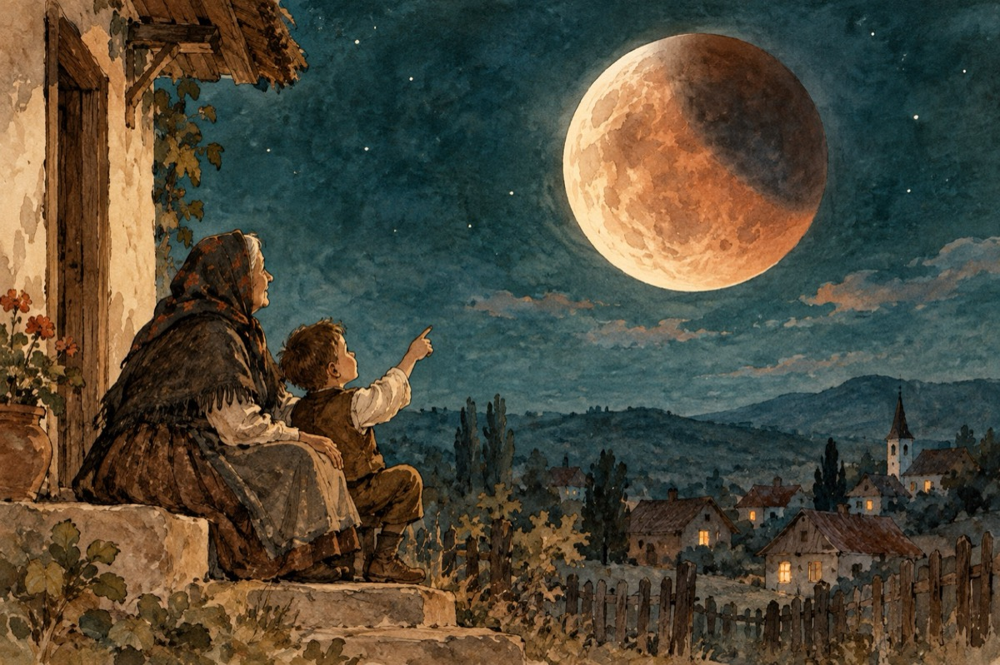

Vârcolacii
-Se zvârcolesc vârcolacii pe lună
Ia uite maică cum ronțăie din ea!
Ți-am spus Catinco, nu-i a bună
Iar vine peste noi întunecimea!
-Auzi bunicuțo, dar ce sunt vârcolacii și unde stau?
-Ei nepoate, i se spune modern Epsylon.
E un fel de balaur cosmic, e de rău!
Balaurul Epsylon e un uriaș în Cosmos construit
Deznodat și-naripat, prelungit și-ncolăcit,
Un enorm, un bulbucat, cât vezi un împrăștiat
Făcut din piatră, gaze și foc
De se-ncolăcește pe loc
Fără prea multă sforțare și după Împăratul Soare!
Așa ronțăie într-una
Și pe frumoasa noastră, Luna
-Bunico îmi pare rău,
Adevărul îl știu eu,
Vârcolacii nici nu sunt!
E vorba de relația cosmică între Lună și Pământ
Relație prin rotație
Și din când în când; pe cuvânt,
Bunico, se-ntâmplă eclipse și cicluri lunare
Cu umbra pusă de pământ, oprind razele de soare
Că nu sunt vârcolaci, ce bine-mi pare!
Vasile Groza